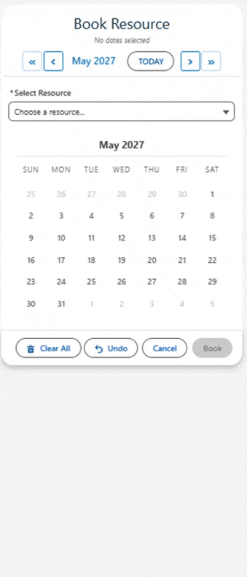

multiDatePickBooking
The most advanced resource booking component for Salesforce. Book rooms, equipment, vehicles, or people across multiple dates with a visual time-slot grid, real-time conflict detection, capacity tracking with live availability badges, status colors, and inline edit mode.

Overview
multiDatePickBooking is the most advanced component in the MultiDatePick suite. It combines the calendar with a resource selection panel and a visual time-slot grid. Users pick a resource (or multiple resources), select dates, and then click available time slots to create bookings. The component queries your resource object for available items, checks for existing bookings to detect conflicts in real time, and creates booking records automatically.
Capacity mode supports multiple bookings per time slot — perfect for training rooms, class enrollments, and hot-desk pools. Live badges show "3/10" fill counts. Status colors distinguish Confirmed, Pending, and Cancelled bookings at a glance. Edit mode lets users modify, reassign, or delete existing bookings inline. Business hours are pulled from each resource record, so different resources can have different availability windows.
On This Page
Use Cases for multiDatePickBooking
The Booking component is ideal for any scenario where a shared resource needs to be reserved on specific dates and times, with conflict detection and optional capacity tracking. Here are 15 real-world use cases.
1. Conference Room Booking
Reserve conference rooms across multiple dates and time slots. The booking grid shows real-time room availability. businessHoursStartField and businessHoursEndField pull availability from each room record — so a boardroom open 7 AM to 7 PM and a huddle room open 8 AM to 5 PM each show their own hours. allowMultipleResources lets users compare availability across rooms.
2. Training Enrollment
Employees enroll in training sessions by selecting a course, choosing dates, and picking time slots. capacityField points to Max_Participants__c on the course record — capacity tracking shows how many seats remain per session. Status colors distinguish Enrolled (green), Waitlisted (orange), and Cancelled (red). showAvailabilityCount displays live "3/10" badges.
3. Desk Hoteling
Employees reserve hot desks by selecting a desk resource and choosing dates with 1-hour time blocks. Capacity badges show desk availability — when a shared desk hits its limit, the slot shows as full. Status colors distinguish Reserved (blue), Checked In (green), and Cancelled (red). twoMonthView helps employees plan hybrid schedules weeks in advance. enableBookingEdit lets employees modify or cancel reservations.
4. Lab & Studio Booking
Researchers book lab time by selecting a lab resource and choosing 1-hour blocks. Business hours are pulled dynamically from each lab record — so a chemistry lab open 8-6 and a recording studio open 10-10 each show their own hours. conflictBehavior = 'block' prevents double-booking. Status colors track Reserved (blue), In Use (orange), Completed (green), and Cancelled (red).
5. Vehicle & Fleet Reservation
Reserve company vehicles for specific dates and time ranges. The booking grid shows which vehicles are available. allowMultipleResources lets fleet managers compare availability across the entire fleet. bookingResourceField links each reservation to the vehicle. hoverFields shows vehicle details (Make, Model, License Plate) on hover.
6. Equipment Checkout
IT departments, AV teams, or field service operations manage shared equipment. Users select equipment from the resource dropdown, pick dates, and choose time blocks. Conflict detection prevents double-booking. recordNameField stores a descriptive checkout name. preloadExistingDates shows the user's existing checkouts on the calendar.
7. Therapist & Counselor Scheduling
Clients book sessions with a specific therapist (the resource). timeInterval = 60 shows 1-hour session blocks. businessHoursStartField pulls each therapist's available hours. showSlotStatusColors shows which slots are Booked vs. Available. enableBookingEdit lets clients reschedule by moving to a new date/time.
8. Classroom & Seminar Room Allocation
Schools allocate classrooms for courses and events. capacityField tracks room capacity (e.g., 30 seats). Capacity badges show how many courses are scheduled in each slot. disableTimeSlotGrid can be turned ON for full-day bookings where time doesn't matter — just the date and the room.
9. Salon & Spa Appointment Booking
Clients book appointments with specific stylists or therapists. Each resource has different business hours. timeInterval = 30 shows 30-minute appointment slots. statusField tracks Booked, Confirmed, Completed, and No Show. hoverFields shows the client name and service type on hover.
10. Court & Hearing Room Scheduling
Court administrators assign courtrooms (resources) to hearings. availableDates restricts to court-in-session dates only. capacityField allows concurrent hearings in larger courtrooms. statusField tracks Scheduled, In Session, Adjourned, and Cancelled with color coding.
11. Photography & Videography Studio Rental
Studios rent out spaces and equipment bundles as resources. timeInterval = 60 shows hourly blocks. businessHoursStartField adjusts per studio — a daylight studio might be available 6 AM to 6 PM while a blackout studio runs 24/7. bookingResourceField links each booking to the studio.
12. Coworking Space Booking
Members book desks, private offices, or meeting pods. capacityField handles shared spaces (e.g., a 4-person pod shows "2/4" availability). enableBookingEdit lets members cancel or shorten their booking. hideBookingsWithStatus = 'Cancelled' removes cancelled bookings from the grid and capacity counts.
13. Medical Equipment Scheduling
Hospitals schedule MRI machines, CT scanners, and other shared medical equipment. timeInterval = 15 for precise scheduling. conflictBehavior = 'block' prevents overlapping scans. preloadExistingDates shows the full equipment schedule. hoverFields displays patient info and scan type on hover.
14. Athletic Facility & Field Rental
Recreation departments manage field and gym rentals. Resources = fields/courts. timeInterval = 60 for hourly blocks. twoMonthView helps coaches plan a full season. capacityField allows concurrent practices on shared fields. resourceBookButtonLabel can be customized to "Reserve Field".
15. Hotel & Property Management
Property managers handle room reservations. disableTimeSlotGrid turns off time selection for full-night stays — just pick dates and the room. capacityField handles room types with multiple units (e.g., 5 Standard Kings). endDateField consolidates multi-night stays into single check-in/check-out records.
Lightning Page Setup
What You Need First
The Booking component requires two objects: a Resource object (what gets booked) and a Booking object (where reservations are stored).
Resource Object (e.g. Meeting_Room__c):
| Field | Type | Purpose |
|---|---|---|
Name | Text (standard) | Display name shown in the resource dropdown |
Business_Hours_Start__c | Time | When the resource becomes available each day |
Business_Hours_End__c | Time | When the resource stops being available |
Capacity__c | Number | Optional — max bookings per time slot (for capacity mode) |
Booking Object (e.g. Room_Booking__c):
| Field | Type | Purpose |
|---|---|---|
Booking_Date__c | Date | The date of the reservation |
Start_Time__c | Time | When the booking starts |
End_Time__c | Time | When the booking ends |
Meeting_Room__c | Lookup (to Resource) | Which resource is booked |
Contact__c | Lookup (to Parent) | Links to the parent record |
Status__c | Picklist | Optional — for status color coding |
recordId is passed automatically on Record Pages. For App Pages, Home Pages, or Experience Sites, use staticRecordId. Create a few resource records so the dropdown has items to show.Drop It In
Drag multiDatePickBooking onto your page in App Builder and configure:
Resource Object Settings
resourceObjectApiName— the resource object, e.g.Meeting_Room__cresourceNameField— display name field, usuallyNamebusinessHoursStartField— e.g.Business_Hours_Start__cbusinessHoursEndField— e.g.Business_Hours_End__ccapacityField— optional capacity field, e.g.Capacity__callowMultipleResources— ON to let users book multiple resources at once
Booking Object Settings
resourceBookingObject— the booking object, e.g.Room_Booking__cbookingDateField— the Date field, e.g.Booking_Date__cbookingStartTimeField— e.g.Start_Time__cbookingEndTimeField— e.g.End_Time__cbookingResourceField— lookup to the resource, e.g.Meeting_Room__crelationshipFieldApiName— lookup to the parent, e.g.Contact__c
Or use the Setup Wizard:
configName— e.g.Training_EnrollmentorDesk_Hoteling
What Comes Out
Flow Setup
What You Need First
Same two objects as the Record Page section above (Resource + Booking). Create these Flow variables:
| Variable Name | Type | Collection? | Notes |
|---|---|---|---|
{!bookingSuccessCount} | Number | No | How many booking records were successfully created |
{!bookingConflictDates} | Text | Yes | Dates where bookings failed due to conflicts |
Drop It In
Add a Screen element in Flow Builder, drag multiDatePickBooking onto it, and configure the same Resource and Booking Object settings as above, plus:
bookingSuccessCount(Output) — wire to{!bookingSuccessCount}bookingConflictDates(Output) — wire to{!bookingConflictDates}
What Comes Out
{!bookingSuccessCount} to show a confirmation message like "Successfully booked 3 time slots." Use {!bookingConflictDates} in a Decision element to notify the user about dates that couldn't be booked.All Properties Reference
Configuration
| Property | Type | Default | Description |
|---|---|---|---|
configName | String | — | Name of a saved MDP_Config Custom Metadata record. Loads all settings from that record. |
Display Properties
Shared display properties from multiDatePickDates: label (default: "Book Resource"), modalTitle (default: "Book Resource"), showInline, twoMonthView, calendarSize, abbreviateDayHeaders, weekStartsOnMonday, showRecurringPattern, showSelectedSummary, showDoneButtonInline, disabled, required.
Resource Configuration
| Property | Type | Default | Description |
|---|---|---|---|
resourceObjectApiName | String | — | API name of the object storing your bookable resources (e.g. Meeting_Room__c). |
resourceNameField | String | Name | Field containing the resource's display name. |
businessHoursStartField | String | — | Time field defining when the resource becomes available each day. |
businessHoursEndField | String | — | Time field defining when the resource stops being available. |
capacityField | String | — | Number field on the resource defining max concurrent bookings per time slot. When set, enables capacity mode with live "3/10" badges. |
allowMultipleResources | Boolean | false | When ON, users can select and book multiple resources at once. |
showAvailabilityCount | Boolean | true | When ON with capacityField, shows live availability badges on time slots. |
Booking Record Configuration
| Property | Type | Default | Description |
|---|---|---|---|
resourceBookingObject | String | — | API name of the object where booking records are created. |
bookingDateField | String | — | Date field on the booking object. |
bookingResourceField | String | — | Lookup field pointing to the resource being booked. |
bookingStartTimeField | String | — | Time field for the booking start time. |
bookingEndTimeField | String | — | Time field for the booking end time. |
relationshipFieldApiName | String | — | Lookup field linking each booking to the parent record. |
resourceBookButtonLabel | String | Book | Custom label for the Book button, e.g. "Reserve" or "Schedule". |
Time Slot Configuration
| Property | Type | Default | Description |
|---|---|---|---|
timeInterval | Integer | 30 | Size of each bookable time slot in minutes: 15, 30, or 60. |
disableTimeSlotGrid | Boolean | false | When ON, hides the time grid entirely — bookings are date-only (useful for full-day reservations like hotel rooms). |
allowDifferentTimes | Boolean | false | When ON, each date gets its own time slot grid instead of sharing one. |
groupTimeSlotsByPeriod | Boolean | false | When ON, groups time slots into Morning, Afternoon, and Evening sections. |
Conflict Detection
| Property | Type | Default | Description |
|---|---|---|---|
conflictLookAheadDays | Integer | 360 | Number of days ahead to check for booking conflicts. |
conflictBehavior | String | block | block — conflicting slots are unclickable. warn — conflicting slots show a warning but can be selected. |
Status & Visual Properties
| Property | Type | Default | Description |
|---|---|---|---|
statusField | String | — | API name of a status field on the booking object for color coding. |
statusColors | String | — | Comma-separated mapping: Confirmed:green,Pending:orange,Cancelled:red. |
statusColorDisplay | String | grid | Where status colors appear: grid (time slots) or calendar (date cells). |
showSlotStatusColors | Boolean | false | When ON, time slots show colored stripes matching their booking status. |
hideBookingsWithStatus | String | — | Records with this status are hidden from the grid AND excluded from capacity counts. E.g. Cancelled. |
statusFieldLabel | String | — | Custom display label for the status field in edit mode. |
hoverFields | String | — | Comma-separated field API names for tooltip on hover over booked slots. |
Edit Mode Properties
| Property | Type | Default | Description |
|---|---|---|---|
enableEditMode | Boolean | false | When ON, shows an Edit Mode toggle for managing existing bookings inline. |
editButtonLabel | String | — | Custom label for the Edit Mode toggle button. |
editRecordDisplay | String | — | Controls how records are displayed during editing. |
Record Name Properties
| Property | Type | Default | Description |
|---|---|---|---|
recordNameField | String | — | Text field on the booking object for a descriptive record name. |
defaultRecordName | String | — | Default record name, e.g. "Room Booking". |
appendDateTimeToName | Boolean | false | When ON, appends date and time to the record name. |
Constraint Properties
Shared from multiDatePickDates: maxSelections, allowPastDates (default: false), minDate, maxDate, disabledDates, defaultDates, availableDates, autoJumpToFirstAvailable.
Auto-Save Properties
| Property | Type | Default | Description |
|---|---|---|---|
saveButtonLabel | String | Save | Text on the save button. |
preloadExistingDates | Boolean | true | When ON, queries and displays existing booking records on the time grid. |
preloadMode | String | editable | editable or readonly. |
staticRecordId | String | — | Hardcoded parent record ID for App Pages, Home Pages, and Experience Sites. |
parentRecordIdField | String | — | Alternative parent record linking field. |
endDateField | String | — | End Date field for consolidating adjacent date selections into ranges. |
blockedDatesSourceObject | String | — | Object to query for blocked/unavailable dates. |
blockedDatesDateField | String | — | Date field on the blocked dates object. |
blockedDatesFilterField | String | — | Optional filter field on the blocked dates object. |
Output Properties (Read-Only)
| Property | Type | Description |
|---|---|---|
bookingSuccessCount | Integer | Number of booking records successfully created. |
bookingConflictDates | String[] | Dates where bookings could not be created due to conflicts. |